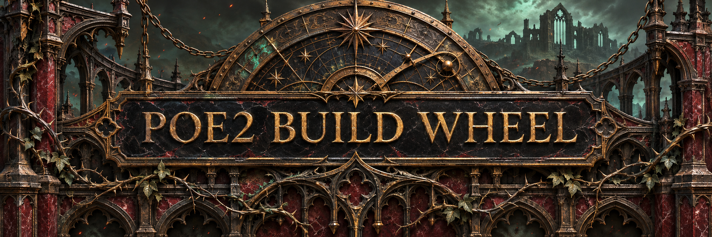

Pasa el cursor o toca un nodo para leer sus efectos. Arrastra para mover el árbol.
Cada build empieza con un salto al vacío.
Todos los sectores tienen el mismo tamaño. El catálogo incluye skills de daño, utilidad, objetos y ascendencias. Se sortean independientemente de la clase y pueden requerir un arma, objeto o ascendencia concreta.
Los filtros cambian la ruleta al instante y se guardan automáticamente. Combina familias, elementos y tipos; después ajusta cada habilidad.
Estas etiquetas siempre se excluyen, incluso en selecciones manuales.
Imágenes de PoE2DB. Se necesita conexión para cargarlas.
Fuente: PoE2DB. Descripciones abreviadas en inglés; datos del juego propiedad de GGG.